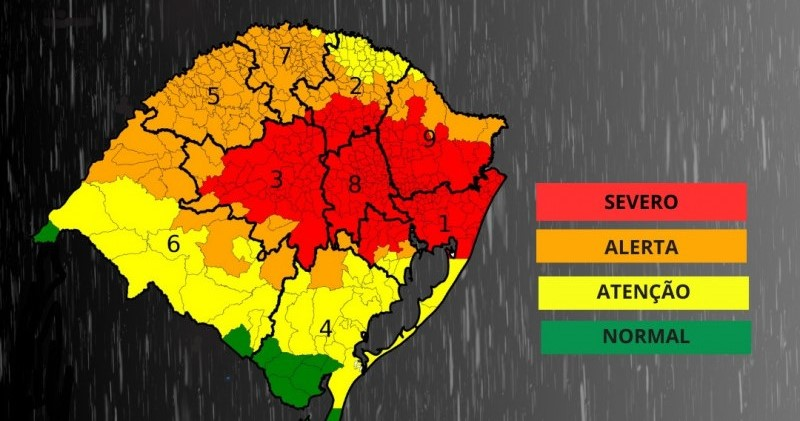

Informações do Ocorrido
As enchentes no Rio Grande do Sul em maio de 2024 estão causando grandes danos, afetando centenas de municípios e resultando em várias mortes e evacuações em massa. Este foi um dos piores desastres naturais na história do estado.
- Mortes: Mais de 100
- Pessoas Desalojadas: Mais de 500.000
- Regiões Mais Afetadas: Vale do Taquari, Canoas, Rio Pardo
Áreas de Risco

Por Que Isso Acontece?
As enchentes no Rio Grande do Sul são causadas por uma combinação de fatores climáticos e geográficos. Chuvas intensas, comuns na região, podem ser exacerbadas por mudanças climáticas, resultando em volumes de água que os sistemas de drenagem não conseguem suportar. A urbanização desordenada e a falta de infraestrutura adequada também contribuem para a gravidade das inundações.
Fatores Contribuintes:
- Chuvas Intensas
- Mudanças Climáticas
- Urbanização Desordenada
- Falta de Infraestrutura de Drenagem
Como Ajudar
Você pode ajudar as vítimas das enchentes doando através das seguintes opções:
-
Banco do Brasil:
Agência: 1234-5
Conta Corrente: 98765-4
Nome: SOS Rio Grande do Sul
-
Caixa Econômica Federal:
Agência: 6789-0
Conta Corrente: 54321-0
Nome: SOS Rio Grande do Sul
-
PIX:
Chave: CNPJ – 92.958.800/0001-38, em nome do Banrisul.
-
Doações de Materiais:
Endereço: Rua da Solidariedade, 123, Porto Alegre, RS